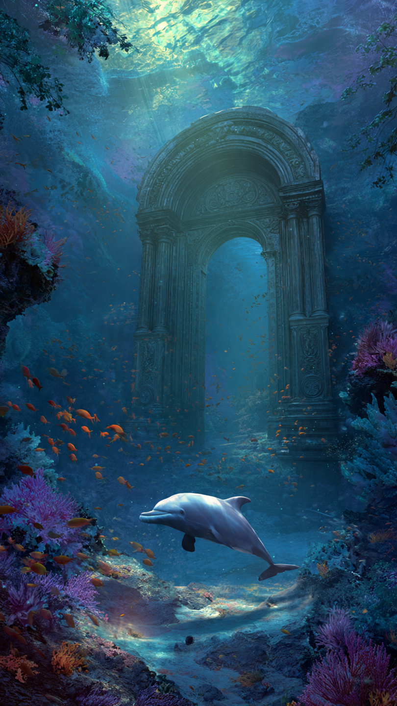
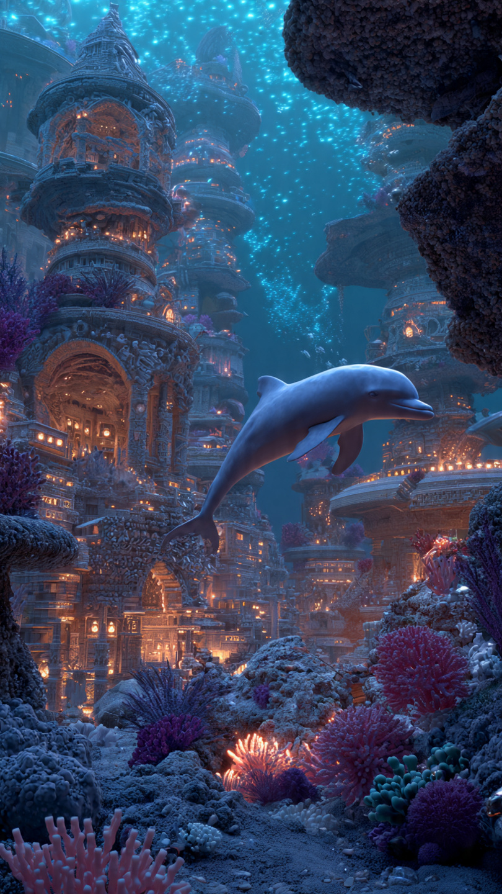

```html
🐬 الدلفين الذي اكتشف مدينة تحت البحر | قصص أطفال
```
في أعماق البحر الأزرق الواسع، كان يعيش دلفين صغير اسمه دودي.
كان دودي يحب المغامرات أكثر من أي شيء آخر.
فبينما كانت الدلافين الأخرى تفضل اللعب قرب الشعاب المرجانية المعروفة، كان هو دائمًا ينظر إلى الأماكن البعيدة ويتساءل:
"ماذا يوجد خلف تلك الصخور؟"
كان والده يقول له:
"البحر كبير يا دودي، وهناك أماكن لم يكتشفها أحد بعد."
فتلمع عينا الدلفين الصغير ويقول:
"إذن سأكون أول من يكتشفها!"
وفي صباح يوم مشمس، خرج دودي للسباحة بعيدًا عن مكانه المعتاد.
كان يتبع مجموعة من الأسماك الملونة التي تتحرك بطريقة غريبة، وكأنها تقوده إلى مكان معين.
بعد وقت طويل، وصل إلى منطقة عميقة لم يرها من قبل.
كان الماء هناك هادئًا جدًا، وبين الصخور ظهرت بوابة حجرية ضخمة.
اقترب دودي منها بدهشة.
كانت البوابة مغطاة برسومات قديمة لمخلوقات بحرية غامضة.
وعندما لمسها بزعنفته...
بدأت تضيء بلون أزرق جميل.
وفجأة انفتحت ببطء.
خلف البوابة وجد دودي شيئًا لا يصدق.
مدينة كاملة تحت البحر!
كانت هناك مبانٍ من اللؤلؤ، وشوارع مضيئة، وأضواء تتحرك بين المنازل.
لكن المدينة كانت هادئة جدًا...
وكأنها تنتظر شخصًا منذ زمن طويل.
وبينما كان دودي ينظر حوله، ظهر مخلوق بحري عجوز وقال:
"أخيرًا وصلت..."
توقف دودي بدهشة وسأل:
"هل كنت تنتظرني؟"
ابتسم المخلوق وقال:
"نعم..."
"لأن هذه المدينة تحتاج إلى مساعدتك."
📷 الصورة رقم 1

نظر دودي إلى المخلوق العجوز بدهشة.
قال:
"كيف يمكنني مساعدتكم؟ أنا مجرد دلفين صغير."
ابتسم العجوز وقال:
"أحيانًا لا يحتاج إنقاذ المدينة إلى الأقوى..."
"بل إلى من يملك قلبًا شجاعًا."
أخبره المخلوق أن المدينة كانت في الماضي مليئة بالحياة والمرح، لكن منذ سنوات اختفى لؤلؤة النور، وهي جوهرة سحرية كانت تمنح المدينة طاقتها.
ومنذ اختفائها، بدأت الأضواء تخفت، وبدأ سكان المدينة يغادرونها.
قال دودي:
"سأساعدكم في العثور عليها."
وانطلق في رحلة داخل المدينة القديمة.
مرّ بين القصور المصنوعة من الصدف، وسبح داخل أنفاق مليئة بالنقوش القديمة، حتى وصل إلى مكتبة بحرية ضخمة.
هناك وجد خريطة قديمة تشير إلى مكان اللؤلؤة.
اتبَع دودي الخريطة حتى وصل إلى كهف مظلم في أعمق جزء من البحر.
كان المكان مليئًا بالصخور الغريبة، وكان صوت الأمواج يتردد داخله.
وفجأة...
سمع صوتًا حزينًا يقول:
"من هناك؟"
اقترب دودي بحذر.
فوجد مخلوقًا بحريًا صغيرًا يحرس لؤلؤة النور.
قال دودي:
"هل أخذت اللؤلؤة من المدينة؟"
خفض المخلوق رأسه وقال:
"نعم..."
"لكنني لم أرد إيذاء أحد."
حكى المخلوق أنه وجد اللؤلؤة وحيدة في البحر، فأخذها ليضيء منزله المظلم.
لكنه لم يعرف أنها كانت مهمة جدًا للمدينة.
فكر دودي قليلًا.
لم يغضب منه...
بل قرر أن يجد حلًا يساعد الجميع.
لكن قبل أن يعودوا باللؤلؤة، حدث أمر خطير داخل الكهف.
📷 الصورة رقم 2

بينما كان دودي والمخلوق الصغير يستعدان للعودة إلى المدينة، بدأ الكهف يهتز بقوة.
تساقطت الصخور من الأعلى، وأصبحت الطرق المؤدية للخارج مغلقة.
خاف المخلوق وقال:
"لقد حُبسنا!"
نظر دودي حوله بسرعة.
لم يكن قويًا بما يكفي لتحريك الصخور الكبيرة، لكنه تذكر شيئًا مهمًا.
قال:
"قد لا أكون الأقوى..."
"لكن يمكنني التفكير!"
بدأ دودي يستخدم ذكاءه.
طلب من الأسماك الصغيرة التي كانت قريبة من الكهف أن تساعدهم، واستخدم تيارات الماء لتحريك الصخور الصغيرة بعيدًا عن الطريق.
وبالتعاون مع الجميع، تمكنوا من فتح ممر للخروج.
عاد دودي والمخلوق إلى مدينة البحر.
وعندما أعادا لؤلؤة النور إلى مكانها، أضاءت المدينة كلها من جديد.
عادت الشوارع المضيئة، وامتلأت القصور بالألوان، وعاد سكان المدينة للاحتفال.
اقترب المخلوق العجوز من دودي وقال:
"لقد أنقذت مدينتنا."
ابتسم دودي وقال:
"لم أنقذها وحدي، كل شخص ساعد بطريقة مختلفة."
قرر سكان المدينة أن يجعلوا المخلوق الصغير صديقًا لهم، لأنه لم يكن يريد الشر، بل كان يحتاج فقط إلى من يفهمه.
أما دودي، فعاد إلى منزله وهو يحمل قصة لا يصدقها أحد.
ومنذ ذلك اليوم، أصبح الدلفين الصغير معروفًا بأنه أول من اكتشف المدينة تحت البحر.
وكان دائمًا يقول:
"أجمل الاكتشافات ليست الأماكن الجديدة فقط..."
"بل الأصدقاء الذين نجدهم في الطريق."
🐬🌊 انتهت القصة 🌊🐬
العبرة:
التعاون والفهم يمكنهما تحويل الأخطاء إلى صداقات جديدة، فالقلب الطيب يصنع المعجزات.